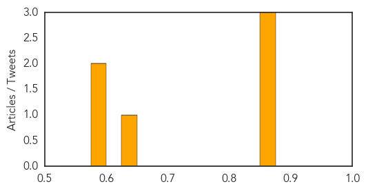
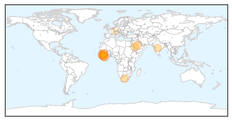

Measles
30-Day Web Trend
0 alerts, 0 warnings
30-Day Twitter Trend
0 alerts, 0 warnings

Article Locations
Article Confidences
Top Articles:
- 0.873
- Pennsylvania students lag in receiving required vaccines
- 0.867
- Pa. vaccination rates among worst in nation
- 0.861
- Vaccines aren't always part of back-to-school preparations in Pa.
- 0.633
- Most kindergartners are vaccinated, but is that enough?
- 0.584
- N.H. vaccination rates for toddlers among best in nation
- 0.578
- Child vaccine requirements change in New York
Top Tweets:
-
No tweets found for Aug 30, 2015
Ebola
30-Day Web Trend
0 alerts, 0 warnings

30-Day Twitter Trend
0 alerts, 0 warnings

Article Locations
Article Confidences

Top Articles:
- 1.000
- Sierra Leone Confirms New Ebola Death
- 1.000
- Ebola countdown – setback for Sierra Leone as one person dies in Kambia
- 1.000
- Facebook CEO Mark Zuckerberg donates $25M to CDC to fight Ebola
- 0.999
- Ending Ebola
- 0.999
- Ebola, AIDS Manufactured by Western Pharmaceuticals, US DoD?
- 0.992
- Sierra Leone Confirms New Ebola Death
- 0.990
- Ebola: WHO says Sierra Leone records zero virus infection
- 0.988
- Ebola Gone But Scars Remain: Survivors Deserve Better
- 0.988
- Africa - News and Analysis
- 0.984
- Is PC a deadly epidemic?
- 0.898
- MRU Researchers, Scientists Pledge to Eradicate Ebola Virus
- 0.774
- Andrew Keili – ponder my thoughts.jpg2
- 0.633
- Ivorian Refugees in Harper, Southeastern Liberia Demand for Ebola Awareness
- 0.548
- When doctors get it wrong: Misdiagnoses are getting a closer look
Top Tweets:
- 0.804
- New Ebola Death Recorded In Sierra Leone Officials Say - Huffington Post http://t.co/5CmMJVevvM ebola EVD
- 0.772
- Sierra Leone: Officials Confirm New Ebola Death - ABC News http://t.co/72Yz7ZwGQX ebola EVD